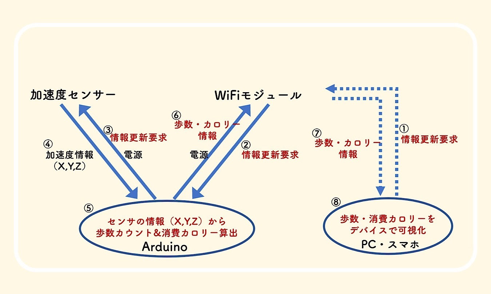

振り返り
今回の課題
前回網倉くんが欠席してIotサービスのほうの進展がなかったため、一気に頑張ろう！！
・携帯機器にするには別で電源供給が必要かも、、、
・もう少しarudino見栄えをよくしたい
作業
■（メインテーマ）
●加速度センサーの代替品として振動センサーを試してみる
外部バッテリーの取り付けをする
●
●加速度センサ使用で歩数の計測：参考ページ
●リアルタイム通信はできそう：参考ページ
→PC、スマホに測定値を直接送れるようにしたい。
●消費カロリーがスマホから可視化できるように！
進捗
振動センサーで歩数を検知することに成功！
反省と次回目標
▪今のままだと残り一か月で完成できない可能性がある。作業効率が悪すぎるのを改善しなければならない。
☞できることは着実に進めて、問題解決したら一気に前進にする。
役割を分担させて、行き詰まる前提で進めていく。
安めの万歩計を買ってみる？？
個々人での次回目標
・あみくら：加速度モジュールでの歩数計速が可能か試す。・ひで：加速度センサー、WIFIモジュール、Arudinoをまとめる箱をFusionと3Dプリンタで作る。
・なるみ：プロジェクトノートの作成
・たねたろー：Arudinoを使用した消費カロリーを表示するシステムの作成
その他
・KKHMF SW‐420常時閉型 振動センサーモジュール・オーディオファン電池ボックス